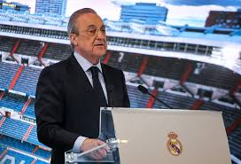

LA MEJOR INFORMACION ACTUALIZADA
El Real Madrid Club de Fútbol, más conocido simplemente como Real Madrid, es una entidad polideportiva con sede en Madrid, España. Fue declarada oficialmente registrada como club de fútbol por sus socios el 6 de marzo de 1902 con el objeto de la práctica y desarrollo de este deporte —si bien sus orígenes datan al año 1900, y su denominación de (Sociedad) Madrid Foot-ball Club a noviembre de 1901— siendo el quinto club fundado en la capital.n.Tuvo a Julián Palacios y los hermanos Juan Padrós y Carlos Padrós como principales valedores de su creación. Identificado por su color blanco —del que recibe el apelativo de «blancos» o «merengues»—, es uno de los cuatro clubes profesionales de fútbol del país cuya entidad jurídica no es la de sociedad anónima deportiva (S. A. D.),n. ya que su propiedad recae en sus más de 90 000 socios. Otra salvedad comparte con el Athletic Club y el Fútbol Club Barcelona al participar sin interrupción en la máxima categoría de la Liga Nacional de Fútbol Profesional, la Primera División de España, desde su establecimiento en 1929. En ella posee los honores de haber sido el primer líder histórico de la competición,el de club con más títulos, y el de la máxima puntuación en una sola edición.
Historia y Evolución del Escudo
- *Las iniciales. En la parte circular se entrelazan las iniciales del club. Una "m" en referencia a Madrid, una "f" en referencia a fútbol, y una "c" en referencia a club, el nombre que acuñó el club en su fundación: Madrid Foot-ball Club. Se ha mantenido hasta la actualidad debido a la coincidencia con su posterior castellanización de Madrid Club de Fútbol.
- *La banda transversal. Atravesando el escudo aparece una banda trasversal de color azul marino. El color inicial de esta fue el morado en referencia a la región histórica de Castilla como símbolo identificativo. El color fue variado en la última modificación del escudo en 2001 por el azul marino por motivos de mercadotecnia.
- *La corona real. En 1920, el rey Alfonso XIII de Borbón le otorgó a la entidad el título de «Real». En representación de la realeza española, se le añadió la corona. Además, la citada denominación se antepuso al nombre del club.
- *El bordeado dorado. El escudo se encuentra bordeado en un color amarillo-dorado.
Real Madrid Castilla Club de Fútbol
El Real Madrid Castilla Club de Fútbol, más conocido simplemente como Castilla, es el primer filial del club a efectos legales dependientes desde el año 1972, fecha en la que adquiere los derechos federativos de la Agrupación Deportiva Plus Ultra, y que desde principios de los años 1940 hacía las funciones de club filial mediante distintos acuerdos. Con anterioridad, dichos acuerdos eran mantenidos con otros clubes de la capital, además de tener el propio club secciones inferiores o un club amateur para formar a los jugadores antes de su ascenso al primer equipo, que fue denominado posteriormente y antes de su extinción como Real Madrid Club de Fútbol "C", pasando a ser el segundo filial. Actualmente, como último de los clubes formativos de la cantera blanca antes del primer equipo, milita en la Segunda División "B" tras perder la categoría de plata en la temporada 2013-14. Se ha proclamado campeón de la Segunda División en una ocasión en las treinta y dos temporadas en las que ha participado, lo que le convierte en el mejor equipo filial de los clubes españoles en cuanto a títulos, rendimiento y temporadas disputadas. Ha conquistado además otros once campeonatos de liga en divisiones inferiores.